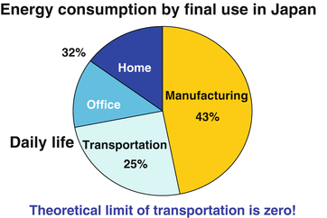

Currently, many Japanese companies are looking for growth opportunities in developing countries. If a saturation of man-made objects is to occur globally in the not-too-distant future, as we discussed in Chap. 1, how should Japan act?
If we call demand that leads to a saturation of man-made objects diffusive demand
, and call demand that has not yet emerged creative demand
, as defined previously, Japan should stimulate creative demand, create new industries, and seek markets globally by solving the problems it faces.
In light of “Vision 2050
” presented under the second paradigm, “Limited Earth,”
it is necessary that one of the areas in which such things are possible is that of energy and resources. Automobiles, air-conditioners, water heaters, refrigerators, lighting, solar cells, storage batteries, and fuel cells are all reservoirs of innovation.
Another important area is one that responds to the aging society
, and an enormous range of new industries may be found there. Products that will emerge include safe automobiles, on-demand transportation, robot suits, housework assistance robots
, self-help care supporting houses, and regenerative technology for eyes and teeth. The social system that mobilizes them will bring about innovation and create new industries.
In this chapter, let us consider the direction Japan should take in the area of environment and resources.
Monozukuri (Making Things)1 and Daily Life
First, let us take a look at the present state of energy consumption in Japan, which is assumed when we think about the area of the environment and resources. When energy consumption is analyzed, it is often broken down in accordance with the basic distinction between industrial and consumer sectors. This idea is akin to the dichotomy of capitalists vs. workers, which was popularized in a previous age and is thus inappropriate.
I propose to break down energy consumption from the perspective of monozukuri
(making things) and daily life. Refer to the pie chart in Fig. 4.1. Monozukuri includes producing food
in agriculture in addition to manufacturing plastic in the chemical industry and iron in the steel industry.
Fig. 4.1
Distribution of energy consumption in Japan. (Data from Sogo Enerugi Tokei 2007 (Data: 2005), Japan Agency for National Resources and Energy). Note: Energy consumption at energy transformation sector indicates the energy is not converted to electricity as well as self consumption at power generations
Most energy conversion takes place in power generation plants, which themselves consume energy to produce electricity.
Daily life covers households and offices that consume the goods thus produced. Although energy use in offices is typically classified as industrial sector use, we classify it as energy use in daily life because offices are also places where people spend their time working. Energy use for passenger and cargo transport is also included in energy use in daily life. Energy use for passenger transport is mostly accounted for by energy consumption that results from operating transport equipment such as automobiles. Energy is, after all, consumed for cargo transport by people driving vehicles such as cars.
Such a broad classification from the two perspectives is intended to make it easier to discuss which activities emit carbon dioxide and what are reasonable ways to reduce carbon dioxide emissions. For these purposes, it is more logical—and makes it easier to think of responses—to adopt the standard that classifies energy consumption by whether energy is consumed in making or using things, instead of the standard based on the dichotomy in which capitalists or workers are using energy.
Electricity generated by power plants is consumed for monozukuri
, or making things, and for daily life. If, in this way, energy consumption is divided into consumption for monozukuri and daily life, in the case of Japan, a little less than half of total energy consumption is for making things and a little more than half for our daily lives, as can be seen in the pie chart in Fig. 4.2.

Fig. 4.2
Energy consumption by final use in Japan
In China, 70–80 % of total energy consumption is presumably for making things. The reasons for China's low energy efficiency are the low energy efficiency of high energy consuming industries such as metal and chemical industries, coupled with the high proportion of such industries, as well as energy prices that are kept low by governmental guidance (Nan Zhou et al. 2007). Conversely, 70–80 % of the total energy consumption in the United States is considered to take place in daily life. The United States also has a social structure that is unlikely to motivate energy saving because energy prices are low.
The tendency of energy consumption to shift gradually from consumption for making things to that for daily life corresponds to the process of transforming from developing countries to emerging economies and further into advanced countries, and the industrial structural process of shifting from primary industries to the secondary and tertiary industries. Also, developed countries may differ in terms of which kinds of activity use more energy depending on whether industries for making things remain to a considerable extent, as in Japan, or to a small extent, as in the United States. In addition, when it comes to the question of which type of activity in daily life is energy used for, 28 % of total energy consumption is used for transport in the United States (U.S. Energy Information Administration 2011).
Let me add that an index measuring primary energy supply per GDP is often used in international comparison of energy efficiency
. This index means how much energy is consumed to generate a unit of GDP. This index only gives one perspective. The argument once made that Japan had been surpassed by other developed countries in terms of energy efficiency was too simplistic.
For example, like Iceland before the Lehman collapse, a rapid increase in the percentage of GDP accounted for by the financial industry makes it appear that the energy efficiency
per GDP unit has increased. Since an increase in the percentage of service industries such as the financial industry which do not use much energy makes GDP (the denominator of the primary energy supply-to-GDP ratio) increase more than primary energy supply (the numerator of the ratio), it necessarily results in a decrease in the supply (consumption) per unit.
Therefore, in discussing energy efficiency
, it is meaningless unless the energy efficiency in an individual sector such as the cement or auto sector is discussed. If energy efficiency is compared from this perspective, Japan boasts the highest energy efficiency in the world. This is an important point.
In any case, the energy consumption structure varies from country to country. The approach for reducing greenhouse gases
represented by carbon dioxide differs by country.
In the case of Japan, the strategy that should be taken is clear.
Forty-three percent of Japan's energy consumption is related to “making things.” As the energy-saving technology in this area is advanced, it is difficult to reduce emissions further in industries such as the cement or steel industries.
The remaining 57 %, however, is consumed in “daily life.” The total of household and office consumption accounts for 32 %, and the remaining 25 % is consumed by transport including commercial transport. In addition, if we take a look at energy consumption in Tokyo, about 90 % is accounted for by “daily life.” This gives an important hint for predicting the change in the structure of energy consumption in the future. Japan, which has such a structure of energy consumption, is advanced in energy conservation in making things but has enough room for energy saving in “daily life.”
If you look at the world, on the other hand, large room for improvement is left in energy saving in “making things” in most countries, and they have the potential for energy saving in “daily life” as much as, or more than, Japan does.
In light of this situation, it may presumably be concluded that the strategy that Japan should adopt is to lead the world in energy saving in “monozukuri
(making things)” and to reduce greenhouse gas emissions in “daily life.” Assembly industries such as automotive and consumer electronics industries should continue to develop excellent energy-saving products and sell them in Japan and abroad. The materials industries should also lead the world in energy-saving technology and transfer technology to other countries to contribute to reducing carbon dioxide on a global scale. On the other hand, carbon dioxide emissions should be reduced in “daily life” in Japan.
Structure of Energy Consumption in Households
Now, what is energy consumption in the household like? Figure 4.3 shows the breakdown of household energy consumption by use.
Fig. 4.3
Energy consumption in houses and offices. (Data from Handbook of Energy & Economics Statistics in Japan 2009, The Energy Conservation Center, Japan)
In the energy consumption breakdown by use, water heating represents the largest share, followed by air-conditioning, each accounting for 30 %. With lighting and refrigeration (motor and other primary components) included, these uses account for nearly 80 % of home energy consumption
. Air-conditioning accounts for 30 % and lighting 40 % of office energy consumption. Therefore, as you may see, to what extent energy consumption can be reduced in these areas with large energy consumption is the key at home and office.
Let us take an air-conditioner as an example. The mechanism of an air-conditioner is completely different from that of an electric stove or kotatsu. An air-conditioner works by a machine called a heat pump, which pumps out indoor heat and pumps in outdoor heat. It discharges heat from the indoor to the outdoor space when cooling and transfers heat from the outdoor to the indoor space when heating.
The energy efficiency
of an air-conditioner is represented by the coefficient of performance. The upper table in Fig. 4.4 shows this. The coefficient of performance, 3, in the leftmost cell of the upper table means that 1 kW of electricity enables 3 kW of heating or cooling.
Fig. 4.4
Heating energy consumption to 1/12 at 2050
The theoretical limit of the coefficient of performance is calculated as “indoor temperature divided by outdoor-indoor temperature difference.” Note that the indoor temperature is represented in absolute temperature, obtained by adding 273 to the actual temperature in Celsius. If the current indoor air temperature is 28° and if the outdoor air temperature is 35°, the coefficient of performance is (273 + 28)/(35 − 28) = 43. In other words, it is possible to pump out of the indoor space heat which is 43 times as much as the electric energy consumed. This value, 43, is a theoretical value, and it was actually only 3 around 1990. Conversely, how much difference there is between the theoretical and the actual value constitutes the potential room for innovation.
Just like an air-conditioner, an automobile, which I mentioned in Chap. 1, has large room for innovation. In contrast, cement has small room for innovation. In thinking about in which areas it is effective to reduce carbon dioxide emissions and in which areas it is effective to promote energy-saving technology, it is important to see first what degree of difference there is between the theory and the reality. If there is a divergence between them, then the next procedure is to find out where the cause of the divergence is from the technological perspective and search for a path to innovation.
Appropriate Regulation Encourages Innovation
In general, environmental regulation is still believed to increase costs for businesses and weaken their competitiveness. During the 1990s, however, Michael Porter
, a researcher famous for his theory of management strategy, presented the so-called “Porter Hypothesis
,” which says that environmental regulation of domestic companies leads to their enhanced international competitiveness (Porter and van der Linde 1995).
The Porter Hypothesis goes as follows. As companies work to reduce pollution following the institution of environmental regulations
, technical innovation progresses to bring about savings in raw materials and an increase in energy productivity. As a result of this, some companies realize an improvement in earnings that exceed the cost of the environmental measures. Therefore, appropriately-designed environmental regulations bring about technological innovations and make companies more competitive.
For instance, the following cases can be cited. Corporate productivity rose in Japan and Germany, which introduced stringent environmental regulations
in the 1970s. The introduction of stringent exhaust gas regulations by the Japanese version of the Clean Air Act
(or “Muskie Act
,” automotive exhaust gas regulations which prescribed emission reductions of nitrogen oxide and other substances from gasoline-powered passenger cars to one tenth of the level at that time) led to strengthening the competitiveness of Japanese cars in the U.S. market (Ueda 2001).
Another example is the Dutch tulip. The Netherlands is famous in the world for tulip bulb cultivation. As tulip cultivation
aggravated oil and water pollution, environmental regulations
became more stringent. The shift to hydroponics in response to the strengthened regulations is said to have solved environmental problems and to have also improved the international competitiveness of the Dutch tulip.
There are many objections to the Porter Hypothesis, however. There are cases where strengthening environmental regulations
doesn't work. As a matter of fact, it is natural that there are both successful and unsuccessful cases.
In short, it depends on whether there is room for innovation. Strengthening the regulation of an area where innovation is technically possible yields good results, as seen for example in the automobile and cement industries. The problem here is that there is insufficient deliberation among the policymakers, economic bureaucrats, and engineers in creating environmental regulations
and that they fail to see how much room there is for innovation in imposing regulations.
A technological point of view cannot be said to be fully reflected in discussions on the economic impact that environmental regulations
may have. This is a weakness of the economic policy.
Air conditioners provide a good example in this regard, as well. The discussion of the technology prediction for air-conditioners shown in Fig. 4.4 was actually one that my research group at Tokyo University made in 1990. We had excellent engineers participate in the discussion to predict the future evolution of air-conditioners. The conclusion obtained was that the coefficient of performance would increase from 3 to 12 by 2050. It was considered hardly possible at the time because we predicted that an air conditioner of the same performance would work with a quarter of the power consumption.
In making the prediction, we went into extreme details. For example, we even estimated how much the magnet used in the motor of an air conditioner's compressor would be improved. The magnet technology is relevant to the efficiency of an air conditioner. One of the causes of the large gap between the actual coefficient of performance and its theoretical value for an air conditioner is the fact that its compressor consumes about twice the amount of electricity as the theoretical value. It can be improved by using a more efficient magnet for the motor. We predicted that a permanent magnet called a neodymium-iron-boron magnet would become available to raise the efficiency of the motor. Energy consumption would be reduced as a result. We made this prediction by considering various elemental technologies contributing to increasing the efficiency of an air conditioner, including not only magnet technology but also fluid dynamics technology or lubricating oil technology.
The prediction that the coefficient of performance would increase fourfold by 2050 was completely ignored by a committee of the Ministry of International Trade and Industries (MITI, currently the Ministry of Economy, Trade and Industry). However, the speed of reality was beyond even our prediction. The coefficient of performance reached 5 in 2004 and 7 in 2010. It more than doubled compared with 1990. At this rate, it may exceed 12 in 2050.
In fact, when Japan’s Energy Conservation Law was revised in 1998, a formula was adopted for introducing regulatory standards that take into consideration the technology improvement potential of products. In concrete terms, conservation standards are determined according to a formula (called the “top-runner method”) that takes into account such factors as the performance of the item among products currently commercialized that has the best energy efficiency (i.e., the top-runner), and future projections of technological development. If a company continues to sell a product that does not meet the standards without sufficient reason, the company’s name may be published and fines may be levied. Goods made subject to these regulations were mainly home electrical appliances and automobiles; the energy efficiency of these items has since seen great progress. For example, the energy reduction of air conditioners was noted above. Because the achievement of higher regulatory standards increases the competitive power of products, these policies are evaluated highly for having created strong incentives for energy conservation.
In the 2013 revision to the Energy Conservation Law, building materials with enhanced insulation properties were also included in the top-runner system. Also, in 2012 the Japanese Government decided on a policy making it mandatory for all newly constructed buildings (homes, office buildings, etc.) to comply with energy conservation standards by the year 2020. In the future, the rapid realization of these insulation mandates will lead to innovations that serve to boost the competitiveness of the construction industry.
In this way, a rational technological prediction contrasting theory and technology is indispensable for examining regulations and their economic impact.
Air-Conditioning Energy Consumption Can Be Reduced to One Twelfth
Although Japan is a country of high energy efficiency
, one of its few weaknesses is in building insulation
.
This is related to its history and climate. As Kenko Hoshi wrote in the Tsurezuregusa—“A house should be built with the summer in view”—Japanese houses were built for the purpose of enduring the mugginess of summer (Porter 1914). It is uncomfortable in the summer in Japan because of the high humidity and temperature. For this reason, the roof tiles of a Japanese house are thick, and it has enough space underneath for good ventilation. On the other hand, it is not suitable to spend winter in. Japanese people used to endure the winter by being thickly clad and warming themselves over a hibachi or Japanese charcoal brazier.
Then, after World War II, air-conditioning was introduced from Western countries, which resulted in incoherence. Japanese started to use walls instead of shoji screens between pillars for partitioning and to heat and cool their houses. Thus, due to the low adiabatic efficiency of a Japanese house, in summer it has to be cooled by using a large amount of energy. It also results in a violent outflow of hot air from air conditioners that can make things unpleasant.
Due to poor insulation, there is a different problem in winter: the warm air in the room comes in direct contact with a windowpane cooled down to a low temperature by the outside air, causing condensation. Condensation causes mold and mites. On the other hand, a large difference in temperature tends to occur between different locations in the house, and such problems have occurred as elderly people collapsing in a toilet or bathroom because it is cold in these areas. Japanese used to build a well-ventilated house appropriate to the Asian monsoon zone. Incoherence arose because the Western housing model was introduced without any modification.
Therefore, we should build highly insulated houses suitable to the Japanese climate. Double-glazed windows and vacuum insulation materials are in particular expected to have an insulation effect. Turning single-glazed windows into double-glazed windows increases the insulation effect and can also prevent condensation.
I also think that vacuum insulation materials should be utilized in Japanese houses. Vacuum insulation materials are thin and have better insulation because of a vacuum layer between thin panels. They have already started to be used in refrigerators made in Japan. A refrigerator using vacuum insulation materials has a vacuum-flask-like structure. Its power consumption is small, and it has a large capacity. If vacuum insulation materials are mass produced, their cost can be reduced to the level that enables them to be used as building materials.
As for the thickness of housing insulating materials, in the case of Germany, for example, the standard value has recently been raised from 10 to 20 cm, but, given the housing situation in Japan, 20 cm is not realistic as it results in narrower houses. Vacuum insulation materials are the most appropriate. The situation in many Asian mega-cities is closer to Tokyo than to Germany. Consequently, Japanese technology can contribute to Asia, and, for Japan, technology developed for itself directly provides a breakthrough for advancing into other parts of Asia.
Improving the insulation effect leads to reducing the energy consumption. If the efficiency of an air conditioner increases four times to reduce its energy consumption to a quarter and if the housing insulation effect increases three times, it is possible to reduce the amount of energy consumption for home air conditioning to one twelfth, since 1/3 × 1/4 = 1/12.
Room for Innovation Lies in the Difference Between “Theory” and “Reality”
Three conclusions can be obtained from the above discussion.
The first conclusion is that room for innovation lies in the difference between “theory” and “reality.” Taking the examples of cement and automobiles discussed in Chap. 1, energy saving in the cement industry
has progressed to the point close to the theoretical value, and so there is little room for innovation there. On the other hand, there is large room for innovation in the automobile industry
.
The second conclusion is that a rational technological prediction is important in imposing environmental regulations
. A technological prediction must be made on the basis of an accurate understanding of the difference between the theory and the reality.
For example, even with an air conditioner, its coefficient of performance had been close to 3 and had not improved much before 1990. However, once the goal of energy saving was clearly presented, an innovation occurred, and the coefficient of performance started to increase. If you follow an air conditioner which was awarded the Energy Conservation Grand Prize, you will find that it evolved as expected according to the technological prediction we made. In other words, imposing strict regulations in an area which has a large room for innovation facilitates technological innovation.
The third conclusion is that a technological prediction is also important in making a policy in light of the economic impact of environmental regulations
. Currently, it is hard to say that technological prediction is fully reflected in developing environmental regulations. Consequently, the process winds up in exchanges of unwarranted assertions among the industry, policy makers, and environmentalists.
As far as technological prediction is concerned, no reliable answers can be obtained from companies if you ask them about it. Scholars and engineers have to assemble and logically thrash it out. Such patient and solid discussions have hardly been made. It is thus an important point how to reflect a technological prediction in environmental policymaking and economic forecasting.
Why Did Japan Fail in Diffusive Demand?
As we have seen in the discussion of Vision 2050
, improving energy efficiency
is a central issue that humanity must address. The diffusion of Japan’s exemplary high-efficiency devices will be extremely effective for the world’s energy conservation efforts. To achieve these contributions to world-wide energy-saving goals, Japan must perform well in the economic competition for such products.
Energy and resource conservation technologies in the area of the environment are still what Japan is good at, and Japan maintains its global superiority in them. Japan is globally superior in individual technologies, including those for flat screen TVs of the energy-saving type, LEDs (light-emitting diodes) attracting attention as new light bulbs, solar cells, and high-efficiency water heaters, such as “Eco-Cute,” “ENE-FARM” and “Eco-jaws.” Therefore it is important whether Japan will really be able to keep winning in these areas.
I am strongly concerned about monozukuri
(making things) in these areas, however. For instance, solar cell manufacturers may repeat the failure of DRAM (dynamic random access memory) manufacturers. To be frank, the major cause is poor management.
Monozukuri can be roughly classified into two kinds in accordance with the stage of its development. The first kind of monozukuri
creates a product that has not existed before, such as the LED. The second kind of monozukuri concerns making products which we already know how to make, such as commodity plastics. These two kinds of monozukuri are completely different in terms of the source of competitiveness and competence required.
For instance, one could go as far as to say that the source of competitiveness of a commodity chemical product is found in how much share it has. Shin-Etsu Chemical
has the supremacy, even from a global perspective, in the market of vinyl chloride
, which is one of the commodity chemicals. It is strong because it has the largest share in the world as a single company and has price leadership. Although this is not limited to vinyl chloride and applies to polyethylene, polyolefin, polystyrene, etc., Japanese companies lack a substantial presence except in the vinyl chloride market. In other words, even though the capability for monozukuri
is required for such generic products, what determines competitiveness is scale.
Now what about mobile phones
? For instance, can mobile phones made by Nokia of Finland, which has the largest share in the global mobile phone market, be said to be the outcome of monozukuri
based on the Japanese sense of monozukuri? Nokia’s mobile phones are, after all, made by importing most of the necessary components from Japan and assembling them in foundries in Taiwan. They sell phones thus made all over the world.
Their strength lies not in how they make mobile phones but in their business model. Products such as mobile phones that have become common are called commoditized products. How to earn profit from commoditized products depends more on the matter of management than that of technology and manufacturing—in other words, it depends on the business model.
There is a wall between monozukuri
which creates something that does not yet exist and monozukuri which competes through a business model. There are several points of juncture in the process of the transition from one to the other.
A good example is DRAM
a kind of IC (integrated circuit), whose global market Japan had once conquered.
ICs are said to have started with the invention that came to be well known as the “Kilby Patent
” by Jack Kilby
, who later won the Nobel Prize (Kilby 2000). Then, an energy-saving and general-purpose memory came out which was known as DRAM. Its history is said to have started when Intel Corporation
commercialized a 1-kilobit DRAM for the first time in the world in 1971. Thereafter, the storage capacity increased fourfold almost every 3 years as the generation changed—4 kb, 16 kb, 64 kb, 256 kb, 1 Mb, and 4 Mb.
From the period of 4 kb DRAMs to that of 4 Mb DRAMs, Japanese DRAM manufacturers had held the largest share. As a result, in the middle of the 1980s, Japanese manufacturers’ share in the global DRAM market reached as high as 80 %. Korean manufacturers such as Samsung emerged subsequently, however, and Japanese manufacturers were surpassed by them in 1998.
There are several fatal reasons causing the decline of Japanese manufacturers including a shift in the mainstream of computers, for which DRAMs were mainly used, from mainframe computers, which Japanese manufacturers were strong in, to personal computers.
Another one of the reasons was the fact that production increased as DRAM density increased. As the amount of plant investment became large, a division of labor began in DRAM production to replace the system of doing everything in-house. The development and manufacture of DRAM manufacturing equipment were relegated to manufacturers of semiconductor manufacturing
and inspection equipment such as Tokyo Electron, Nikon, and Advantest. This caused a considerable part of manufacturing know-how to be transferred to semiconductor manufacturers. Such a tendency had already started when 1 Mb DRAMs were produced.
One could go as far as to say that all you have to do to make DRAM is to buy manufacturing equipment. Of course, you can’t make DRAM just by buying manufacturing equipment. In this case, you can start manufacturing DRAM if you hire engineers away from Japanese companies.
When the manufacturing know-how was thus revealed, Korean manufacturers made a huge investment at one fell swoop to surpass Japanese manufacturers instantly. After all, this also boils down to what business model was adopted.
The same thing can be said of polymers
, a representative chemical product. Similarly with generic resins such as polyethylene and polyolefins, which are a kind of polymer, Japanese manufacturers spent all their time on domestic competition and were late in advancing into the global market. Japanese manufacturers only thrashed out minute technical problems and were weak in thinking of a business model. Consequently they ended up losing in the global market.
What should a company do to win in the market of commoditized products? At the stage where a product newly born is gradually commoditized—in other words, where everyone becomes capable of producing the product—a decision is necessary to make a huge investment aimed at gaining a huge share in view of the global market. I think the major cause of the fact that Japanese companies have been losing in a conspicuous number of markets, including the mobile phone market, is their failure in both the timing and scale of investment. The “Platinum Society Network
” (see Chap. 6 for details), which I am now working on, has it in view to solve such a problem of scale from the demand side.
Two-Manufacturer System for Major Appliances
Another important point for Japanese products to survive in the environment area concerns the problem of the “Galápagos syndrome
.”
The Galápagos syndrome refers to the fact that Japanese products, in spite of their high performance, have not become the global standard as they have evolved endemically in an island and are highly priced. At present, the energy efficiency
of Japanese air-conditioners is overwhelmingly high from a global perspective, as represented by the coefficient of performance of 7. Japanese refrigerators are also overwhelmingly energy efficient. These products, however, are expensive anyway compared with those of other countries. In Japan, if you want to buy the latest air-conditioner, it costs you about ¥200,000, but the mainstream price range for air-conditioners in the United States is from ¥70,000 to ¥80,000.
The same goes for refrigerators. Whereas the mainstream price range of refrigerators in the United States is from ¥80,000 to ¥130,000, a refrigerator of the latest model costs about ¥200,000 in Japan. In the United States, people would be surprised to see such a refrigerator: “What is this? God, it’s a fridge!” That’s it. If, however, its price can be reduced to ¥100,000, with its electricity cost being one third of that of comparable products, it will sell like hotcakes.
A washing machine with a highly efficient dryer can sell better if its price can be reduced. For example, in the United States, a lawsuit may be filed over whether or not to hang out the laundry. Whereas ecofriendly people insist that “you should hang out your laundry,” other people argue against them by saying, “Hanging out the laundry causes a decline in the asset value of my apartment house,” or “There is no practice such as hanging out the laundry in the American culture.”
If you use an energy-saving type dryer made by Japanese manufacturers, you use much less electricity in drying your laundry. Japanese dryers are of the heat-pump type and can reduce energy consumption by about 80 % compared with dryers of other types. In this sense, there is a potential demand for Japanese dryers.
The reasons why such high-performance home appliances are high-priced are that there are too many companies making them and that there are too many models of those products. For instance, there are at least seven manufacturers of refrigerators in Japan. In addition, as you can see if you take a look at air conditioners and refrigerators at a large home appliance retailer, even a single manufacturer offers a line of many models. What is the result of this? Japanese manufacturers’ production volumes per model are roughly a few percent of those of a major overseas company. In other words, overseas manufacturers’ sales volumes per model are a factor of several tens larger than those of Japanese manufacturers. The production per model of a Japanese manufacturer is on the order of a hundred thousand, whereas that of a major overseas manufacturer is on the order of several millions.
For instance, let us compare a refrigerator manufacturer which produces 100,000 refrigerators per year with one which produces 1,000,000 refrigerators. Since the fixed cost per unit is given by the total fixed cost/number of units produced, the fixed cost per unit for the manufacturer producing 1,000,000 refrigerators is nearly zero. This is one of the major causes of the current difference in price between overseas and Japanese manufacturers.
What should be done to realize mass production then? Manufacturers producing refrigerators should relinquish their refrigerator operations, which are to be consolidated into, for instance, an “East Japan Refrigerator Company” and a “West Japan Refrigerator Company.” Air-conditioner operations should similarly be concentrated into an “East Japan Air-conditioning System” and a “West Japan Air-conditioning System.” In this way, it is necessary to consolidate manufacturers into about two companies.
The Ministry of Economy, Trade and Industry does realize that there are an excessive number of companies, but, unlike the heydays of industrial policy, it can do nothing about it. In earlier days, the Ministry of Economy, Trade and Industry (which was then the Ministry of International Trade and Industry) has led the consolidation of manufacturers. For instance, in the chemical industry, manufacturers producing methanol, a kind of alcohol, were integrated into East Japan Methanol (led by Sumitomo Chemical) and West Japan Methanol (led by Mitsui Toatsu) during the 1970s. There are numerous such cases in the chemical industry.
If the central government cannot make a move, what approach is available? The following idea is conceived under the “Platinum Society Network
.”
That is, a motivated local government should place a large-volume order for highly efficient energy-saving products. For instance, if multiple local governments place an order for 1 million units of a particular product, the manufacturer of the product cannot produce that amount of product at once. The idea is to create incentives for integration on the demand side, if it is difficult for manufacturers to merge and integrate voluntarily, in order to change the state of too many companies in Japan. The total population of those municipalities which have already decided to participate in the Platinum Society Network
has reached approximately 80 million. Since this is a considerable population, I hope such an attempt can start here.
Of course, I do realize that it is a considerably far-fetched opinion, but is there any good alternative? We should not forget the fact that Japanese DRAM manufacturers who once boasted their prosperity were cornered and eventually reduced to one company, Elpida Memory.
The Anxious Future of Solar Cells
In this regard, I am also anxious about the future of the Japanese solar cell industry
which had led the world until several years ago. Japan had so far led the world in solar cells because the three pillars of “technological progress,” “financial assistance,” and “scheme construction” had functioned effectively.
In terms of technology, the “Sunshine Project
” and the “New Sunshine Project” were created to provide financial assistance to technology development. Governmental subsidies were also provided to users. When solar cells were commercialized, it initially cost about ¥6 million to install solar cells on the roof of a single house. As the electricity charge for an ordinary household ranged from about ¥100,000 to about ¥500,000, only those who were so rich or curious were able to afford installing solar cells (PVTEC web-site 2013). Therefore, the Japanese government subsidized solar cells installation by ¥3 million (PVTEC web-site 2013). As the price for solar cells declined, the subsidy was gradually reduced. Although there are a variety of subsidy programs at present, given the difficult fiscal situation, it is unpredictable what will become of these programs after 2013.
Furthermore, the relevant schemes have been reformed. Given the provision of the Electricity Business Act
that restricts the direct sales of electricity to power plants, one has to become a power plant in order to possess solar cells. This provision was appropriately amended. Incidentally, I have solar cells installed in my house. A scheme was created that enabled me to become the “Komiyama Power Plant” just by signing and affixing a seal to several documents.
This scheme enabled solar cell users to have excess electricity resulting from the full operation of solar cells during daytime purchased by an electric power company, and to purchase electricity from the power company when they are short of electricity, for instance, at night. Japan fostered the solar cell industry by leading in technology, reforming the relevant systems, and providing governmental financial assistance. There is no room for controversy that Japan was an advanced country in the world in terms of solar cells.
In fact, Japanese solar cell production in 2006 accounted for 37 % of global production, pulling significantly ahead of Germany in second place, which had a share of 20 % (IEA 2011). Subsequently, however, Japan was overtaken by Germany and then by China. In 2008, China had the largest share in global production with 26 %, followed by Germany in second place (19 %), and Japan dropped to third place with a share of 18 % (IEA 2011). Even Sharp, which had the largest share in the world in 2006, retreated to fourth place. In these days with the fast speed of information transmission and fierce global competition, you will be overtaken instantly if you relax your guard.
As to the number of companies currently producing solar cells in Japan, there are four if you only count major manufacturers (Sharp, Sanyo, Kyocera, and Mitsubishi Electric), and as many as 18 companies if you count those which are members of the Japan Photovoltaic Energy Association
. Without consolidating these companies and reducing costs by mass production, Japanese solar cell manufacturers will not be able to survive in the global market.
Speaking of solar cells, as far as organic solar cells, which are in the development stage, are concerned, companies may compete with each other in development as much as they like. That will lead to the birth of world-leading products. Crystalline silicon solar cells, which are currently the mainstream, however, have now been completely commoditized, as can be seen from the fact that China has captured the largest share. A business model appropriate to such products is making a large-scale investment at one fell swoop for mass production to win a large share in the global market and reducing costs further by economies of scale to seize price leadership.
Although the fierce nature of global competition is constantly taken up by the media, Japanese corporate management in reality never fails to seem to lack in a global perspective.
As a matter of fact, we performed virtual design for the future prediction of solar cells 15 or 16 years ago. What we did was called life cycle assessment, which designs and assesses an integrated system from resources to products. In so doing, we also conducted a simulation of the production process. As far as the scale of production of solar cell plants was concerned, 1 MW was the mainstream capacity at the time. We thus made a design by assuming three different scales of production: 10 MW, 1 GW, and 100 GW. Then we found a large difference in production cost. In particular, a large advantage from economies of scale was predicted between the scales of production of 10 MW and 1 GW.
One gigawatt is equal to 1,000 MW. As we assumed a production scale of 100 GW at a time when the scale of the production process was 1 MW, not a few people seemed to feel, “Aren’t these solar cell researchers being foolish?” However, the discussion of economies of scale is important, and we were confident, in the light of the market, that such a large scale of production would be realized before long. In fact, Sharp has already constructed a plant whose scale of production is 1 GW. The scale of production of 1 GW is now a common sense of the world.
This virtual design was made primarily by the University of Tokyo in collaboration with industry. We presented it at an academic conference but did not draw so much attention. Massachusetts Institute of Technology (MIT) in the United States published a report on solar cells more than 10 years later. Based on the design of the life cycle of solar cells, the report indicated that their energy pay-back time (the period of operation of energy generating equipment required to recover the energy put into manufacturing the equipment) would be 3 years if they were used in Boston. More than 10 years earlier, we had reported that the pay back time was 2 years if solar cells were installed in Tokyo. The simulation model we used is archived by the Society of Chemical Engineers and is open to the public. Anyone can use the program for calculation (NEDO 2012).
Japan is weak in the ability to conceive what technological analysis is required to foresee the future, and Japanese make more of the results published by researchers in the United States and Europe than these latter really deserve.
Japan, which is a problem-saddled advanced country, is still a developing country in the sense that, for all its technological sophistication, Japan is still naïve when it comes to international marketing of the fruits of that sophistication.
World-Leading “Eco-Cute” and “ENE-FARM”
What consumes energy most in a household is water heating. Japan is the most advanced in the world in energy-saving equipment in this area. “Eco-Cute
” and “ENE-FARM
” are typical of such equipment. Both are excellent devices, and only Japan is mass producing them (Figs. 4.5, 4.6, and 4.7). What should be done for such energy-saving equipment to acquire the world market without repeating the failures of DRAM and solar cells?
Fig. 4.5
Eco-cute. Photo by: Heat Pump & Thermal Storage Technology Center of Japan
Fig. 4.6
Eco-cute with solar thermal energy. Photo by: Heat Pump & Thermal Storage Technology Center of Japan
Fig. 4.7
ENE-FARM. Photo by: JX Nippon Oil & Energy
ENE-FARM is a home fuel cell
which generates electricity by extracting hydrogen from city gas, LP gas, and kerosene and reacting it with oxygen.
About 37 % of the energy from gas and oil which is input to generate electricity is converted into electricity. ENE-FARM uses 50 % of the thermal energy emitted in this process to make hot water. Thus 87 % of the total energy input is utilized; heat loss is only 13 % (Tokyo Gas Web-Site 2013).
Currently, the generating efficiency of a thermal power plant is 42 % on average. Since a loss of about 5 %, including transmission loss, occurs in transmitting electricity from a thermal power plant to homes, electricity used at home is about 37 % of the energy input at a power plant.
In other words, as the amount of electricity available for home fuel cells has reached the level of centralized thermal power generation, home fuel cells use what corresponds to the waste heat discarded at a centralized power plant.
If home fuel cells of solid oxide type (SOFC) are put into widespread practical use in the future in addition to polymer type fuel cells (PEFC), which are now the mainstream, they may achieve an efficiency comparable to the maximum efficiency of a centralized thermal power generation plant. In fact, in the fall of 2011, an SOFC-type fuel cell was placed on the market in Japan. It achieved an impressive power generation efficiency of 45 %, and an overall efficiency of almost 90 % (since 42 % of the thermal energy emitted is used to produce hot water) (JX Nippon Oil & Energy Web-Site 2013).
On the other hand, Eco-Cute is an electric water heater that uses the same heat pump technology as used by air conditioners to boil water by capturing heat in the air. It boils water by using 10 % out of the 37 % of input energy at a power plant that reaches home in the form of electricity. It can then obtain four to five times as much energy. About 80 % is utilized in this case as well: (37 − 10 %) + (10 % × 5). The efficiency of the heat pump will continue to rise in the future.
Eco-Cute is a product which Japanese companies created from scratch. It was the result of technology development for using carbon dioxide as a refrigerant to produce hot water at 80 °C. A refrigerant is a substance that plays an important role in heat transfer. Substances such as CFCs that destroy the ozone layer had been used as a refrigerant and caused problems. Eco-Cute solved those problems.
ENE-FARM was technically more difficult to produce. It requires technology to extract hydrogen from LP gas and other materials. Furthermore, ceramics technology, which plays an important role in batteries, can be said to be Japan’s forte, and Japan has undisputed dominance in the world in this area. A product whose generating efficiency may rise to 45 % before long is expected to be launched in Japan. If such a product comes out, technology for these kinds of products will gain greater importance.
These products have a hot water tank with high performance. The insulation performance of American products of the same type is low. As hot water produced by them cools down quickly, their eventual energy efficiency
is lower. Eco-Cute and ENE-FARM
, which have to keep water heated in a tank, have a tank with high thermal insulation. Japan has an advantage in such comprehensive technology. Both of them realize a high energy efficiency.
ENE-FARM produces hot water by using energy left after generating electricity, and Eco-Cute pumps up heat from the air. In any event, using ENE-FARM and Eco-Cute can greatly reduce energy currently consumed for heating water.
Water heating accounts for 30 % of household energy consumption in Japan, and the demand for hot water for showers and baths is extremely large in the entire world as well (Nakagami et al. 2008). The reduction of energy consumption for this end use makes a major contribution to improving energy efficiency
and reducing the amount of carbon dioxide generated. It is only in Japan that such home fuel cells and heat-pump type electric water heaters are under mass production. A large advantage lies here.
Eco-Cute and ENE-FARM Will Create a 30 Trillion Yen Market
How large then is the size of the market for Eco-Cute and ENE-FARM
?
Let’s estimate it by referring to the automobile market. At present, about 70 million cars are sold in the world in 1 year. Nearly half of them constitute an increase in stock and are newly purchased by people who do not own a car. The remaining half are accounted for by demand replacement.
Now taking these numbers of car sales as reference, let us think about the Eco-Cute and ENE-FARM
market. In developed countries, there is probably no one who does not take a shower or bath, even if there may be those who do not have a car. On the global scale, it may be safe to think that there is a potential market with a scale of about 100 million units.
The key to the diffusion of ENE-FARM and Eco-Cute is, above all, price. An index price in Japan is approximately ¥500,000, and a low price may be required in the United States, where the energy price is low.
The actual selling price of Eco-Cute is already below ¥500,000. It can be reduced further. ENE-FARM is power generation equipment with a capacity of approximately 1 KW and, at the same time, hot water producing equipment. Then its reference price may be ¥500,000, for it also costs to make a power plant. For example, it costs about ¥200,000 per kilowatt to build a thermal power plant. Therefore, the price of about ¥500,000 is thought to be reasonable if you consider that you have to pay ¥300,000 extra for a water heater.
If the price of Eco-Cute and ENE-FARM
as water heaters is assumed to be ¥300,000, the size of the market is ¥300,000 times 100 million. That is, a huge market of 30 trillion yen per year will emerge.
Refrigerator and air conditioner markets are those which already exist. I have already stated the strategy for Japan, which has energy-efficient products in existing markets, to beat countries which compete with it by producing less efficient but inexpensive products. Since the market for home fuel cells and heat-pump type water heaters is a new market, it is necessary to consider a strategy for Japan from the perspective of how to cultivate this huge potential market.
In light of the current trend of informatization, these new technologies and products are expected to be commoditized at a faster speed. In order not to repeat the failures of DRAM and solar cells, it will be necessary to take steps promptly for building a business model in view of commoditization.
Reducing Costs by Taking Advantage of the Huge Domestic Market
What I am most concerned about now is the fact that manufacturers are more interested in the domestic market and have a weak awareness of the need to expand their operations into the global market. They should target the wealthy class abroad. Specifically, they should develop strategies to focus on selling to the wealthy class in North America, Europe, and China.
“It’s the era of global competition. We have to respond to globalization
.” We have heard such comments from management. If you look at the reality, however, you notice the lack of an international mindset and the vulnerability of the international strategy on the part of Japanese companies. In light of the past history, I am concerned that Japan may lose out on a chance to win the international market again.
What happens if developing business abroad is not taken into account from the beginning? If things are left as they are, ENE-FARM and Eco-Cute will be disassembled and copied, and they will start making the same things in China and other emerging countries. Even if the original Japanese products are advertised as having higher energy efficiency
, what happens if their versions are sold at half the price? The results are easily imaginable.
It will probably be impossible to prevent imitation. Japan did the same thing after World War II, when it was at the developing stage. Consequently, what is important is to think thoroughly about how to forestall this and seize the global market, on the assumption that ENE-FARM and Eco-Cute will be copied. Specifically, an attempt should be made to reduce costs through their introduction to the Japanese market through citizens’ action and governmental support.
There is clear compartmentalization between heat-pump type electric water heaters and fuel-cell type power-generating hot water heaters. Heat pumps are suitable for warm areas, and fuel cells are suitable for cold areas. The reason is that, whereas the efficiency of a heat pump declines at low temperature as it captures heat from the outdoor air, that of a fuel cell does not decline even at low temperatures. In other words, these two products mean that Japan has acquired truly powerful products responding to global warming.
I believe Eco-Cute and ENE-FARM
are comparable to the “Model T Ford” at the beginning of the twentieth century. The Model T Ford created something that came to be known as the automotive market, which had virtually not existed before. Henry Ford worked out the mass production system for something that only a small number of rich people had been able to own, and under the slogan of “the price affordable to our employees,” dramatically lowered the cost and created the market itself. Similarly, now that Japan has created such breakthrough new products as Eco-Cute and ENE-FARM, it has to be prepared to create the market itself, as the Model T Ford did.
For this purpose, it is advisable for the government to consider supporting the purchase of ENE-FARM and Eco-Cute to make it easy for many people in Japan to buy them. Even though Japan is now in the population decline phase, it still remains a gigantic market with the world’s seventh largest population with high average income. Create a large market in Japan to enable mass production and a reduction in the cost of production, then lower the price and concurrently develop overseas operations. Such a strategy should be taken.
Of course, it is possible to argue against this by saying that it should be left to the market principle whether a new product is accepted in the market. There are two reasons, however, for me to think that some public support is needed.
First, information is disseminated rapidly. Unlike earlier days, information leaks out instantly on the Internet and spreads to the world. Even if a breakthrough new product is created, the time needed to copy it is too short. It will be too late unless the market is created at a pace incomparably faster than in the age of the Model T Ford.
Secondly, although the global free market is said to be spreading, in reality, there are many countries, such as China and Russia, which participate in competition under “state capitalism,” in which the government owns 100 % of the capital. Although South Korea is generally said to fall outside that category, it is one of the countries where industry consolidation led by the government has been in progress since the currency crisis in the latter half of the 1990s. As symbolized by Samsung and Hyundai, companies in major industries have been almost concentrated into a single company. South Korea has acquired powerful capital strength and competitiveness by “one-company capitalism,” so to speak.
The speed of information transmission is really fast. In the free market, a company has no choice but to change itself to keep up with the speed of information which affects changes in supply and demand. In addition, Japanese companies have to compete with such state capitalistic companies. We now find ourselves in such a competitive environment.
Japan, of course, has the history and pride of having developed on the premise of the free market. It can not engage in state capitalism. In view of the changes in competitive conditions, however, it may be a good idea for the government and private companies to share a vision and for the government to implement measures to support private companies in creating a new market.
In implementing such measures, Japan, which is based on the free market principle, may open itself to foreign capital as needed. It will be fine so long as foreign capital invests in environment-related industries in Japan, manufactures goods in Japan, is based in Japan to carry out activity in Japan and the world, and pays corporate tax and creates employment in Japan. It is problematic as a mature developed country to insist on nationalism even with regard to capital.
What is important is to strengthen the domestic industrial infrastructure
and to create employment. If we think about Japan’s future, it is not sufficient if Japanese companies merely develop overseas operations, construct plants abroad, and survive as capital. If we think this way, in order to create products meeting creative demand
, we may take into account the possibility that foreign capital in Japan realizes it in Japan.
In reality, huge international companies such as General Electric
(GE) of the United States, Siemens
of Germany, and Nestle
of Switzerland actually show a greater reaction to talk of the potential and vision of Japan's environmental technology than Japanese companies and government do.
Japan’s Strength Lies Precisely in “Monozukuri from Scratch”
Now, there is “monozukuri
(making things) from scratch,” which stands in contrast to “creating a business model for monozukuri.” I suspect that Japan’s strength lies precisely there.
In order to bring the strength of Japan to fruition in real economic activity, its weakness must first be overcome. Japanese companies' weakness in monozukuri
has been that they did not determine by themselves what to make. In short, it was monozukuri of the developing country type. For example, in the area of cathode-ray tube TVs, Japanese companies even developed a flat screen cathode-ray tube TV to triumph all over the world, even though the TV market itself had already existed.
In the automotive industry
, Toyota’s originality shines. It is not Toyota alone. In the second half of the 1990s, the Clean Air Act
, which was said to be the most stringent air pollution prevention law in the world at that time, was instituted in the United States. Famous manufacturers of the world, including the Big Three of the United States, thought that it was impossible to make a car that clears the standards of the Clean Air Act.
Then, Honda
, which was a latecomer to the passenger car market, developed a new engine named CVCC. Honda launched the “Civic,” a fuel-efficient and low-pollution car that cleared the standards of the Clean Air Act, to startle the world. Hybrid vehicles, which Toyota and Honda later developed, can also be said to be revolutionary. Certainly, in such examples, the creativity of Japanese companies is outstanding. Nonetheless, in both cases, the automotive market had already existed. The model of Japanese monozukuri
was to improve products in the existing market and to win competition by putting a better product on the market.
Creativity is required in catching up, too. I have no intention at all to deny the creativity of Japanese companies and people. Qualitatively different types of creativity, however, are required for creating new industries and for catching up with competitors in an existing industry.
We have been using electricity as if it were like the air we breathe. However, in a society which has never used electricity, no ordinary way of thinking yields the idea of constructing a power plant, laying out transmission lines, and sending electricity to factories and homes to earn a profit.
When it comes to automobiles, there were no gas stations and roads were not paved in those days. Under such a situation, a practical automobile loaded with a gasoline engine was developed for the first time in Germany in the latter half of the nineteenth century. Subsequently, Henry Ford of the United States developed the “Model T Ford” and revolutionarily lowered its price to create a market. In contrast, Japanese monozukuri
has been dealing with something for which a model to be aimed at had already existed and has not necessarily created new industries from scratch.
Japanese companies should not wait for their opportunities to elicit “creative demand
” and create new industries. They would then be forestalled by companies from other countries. Japan has an advantage in this regard as well. It lies in the fact that Japan is a problem-saddled advanced country—a country advanced into various problems ahead of others. It suffices for us to solve our own problems by ourselves. All we need to do is to engage in monozukuri
of the advanced country type, in other words, to create by ourselves what we need. Moving from the “age of catching up” to the “age of an advanced country” specifically means creating a model from scratch on our own in response to our challenges.
Japan has diligent people, technological capacity, and the foundation for building a social system. What is lacking in Japan is the mindset to create something new from scratch. There are no longer clouds over the hill.
References
International Energy Agency (2011) Trends in photovoltaic applications survey report of selected IEA countries between 1992 and 2010. Report IEA-PVPS T1-20:2011. http://www.australiansolarinstitute.com.au/SiteFiles/australiansolarinstitutecomau/Trends_in_PV_Applications,_Survey_report_IEA_countries_1992_to_2010.pdf. Accessed 25 May 2013
JX Nippon Oil & Energy Web-Site (2013) http://www.noe.jx-group.co.jp/newsrelease/2011/20110915_01_0950261.html. Accessed 25 May 2013
Kilby JS (2000) Turning potential into realities: the invention of the integrated circuit, Nobel lecture, December 8 2000. The Official Web Site of the Nobel Prize 2013. http://www.nobelprize.org/nobel_prizes/physics/laureates/2000/kilby-lecture.pdf. Accessed 25 May 2013
Nakagami H, Murakoshi C, Iwafune Y (2008) International comparison of household energy consumption and its indicator, Figure 4. Energy Consumption per household by final energy use, ACEEE summer study on energy efficiency in buildings. Jyukankyo Research Institute, pp 8–219. http://www.aceee.org/files/proceedings/2008/data/papers/8_24.pdf. Accessed 25 May 2013
New Energy and Industrial Technology Development Organization (2012) http://www.nedo.go.jp/library/mega-solar.html. Accessed 25 May 2013
Photovoltaic Power Generation Technology Research Association web-site (2013) Trends in price structure of photovoltaic system (JP only). http://www.pvtec.or.jp/knowledge/06.html. Accessed 25 May 2013
Porter WN (1914) The miscellany of a Japanese priest being a translation of TSURE-ZURE GUSA, Section 55. Humphrey Milford, London, p 48, http://djm.cc/library/The_Miscellany_of_a_Japanese_Priest_Gusa_Porter.pdf. Accessed 25 May 2013
Porter ME, van der Linde C (1995) Toward a new conception of the environment-competitiveness relationship. J Econ Perspect 9(4):97–118, Fall 1995CrossRef
Tokyo Gas Web-Site (2013) http://home.tokyo-gas.co.jp/enefarm_special/merit/energy.html. Accessed 25 May 2013
Ueda K (2001) Environmental and economic strategies in Japan. Professor, Department of Economic Studies, Kyoto University, The Nippon Foundation Library, Intellectual Cabinet 2001 http://nippon.zaidan.info/seikabutsu/2001/00097/contents/00003.htm. Accessed 25 May 2013
U.S. Energy Information Administration (2011) Primary energy consumption by source and sector. http://www.eia.gov/energy_in_brief/article/major_energy_sources_and_users.cfm. Accessed 25 May 2013
Zhou N, McNeil MA, Fridley D, Lin J, Price L, de la Rue du Can S, Sathaye J, Levine M (2007) Energy use in China: sectoral trends and future outlook. Lawrence Berkeley National Laboratory, United States, http://china.lbl.gov/sites/china.lbl.gov/files/LBNL61904.Energy_Use_in_China_Sectoral_Trends_and_Future_Outlook.2007.pdf. Accessed 25 May 2013CrossRef
Footnotes
1
Monozukuri, which literally means making things or goods, refers to a unique style of Japanese manufacturing and is sometimes defined as “the duplication of design data into a material” or the “art, science, and craft of making things.”